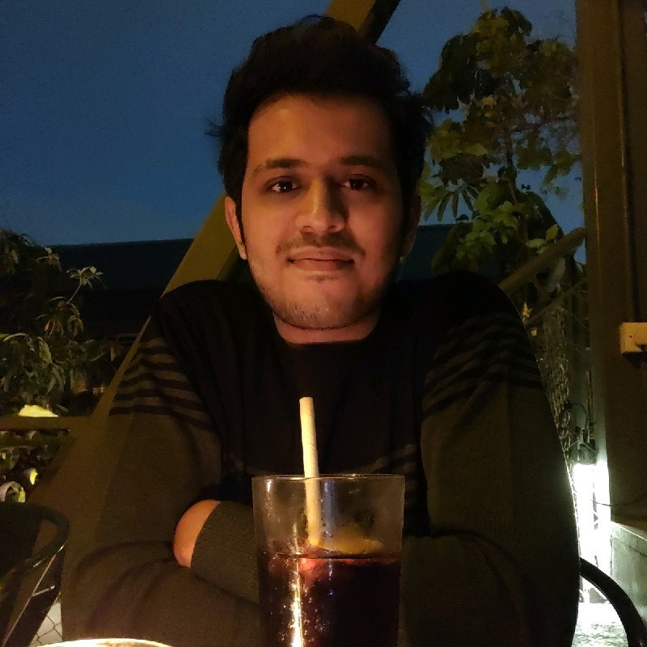

Profile

About Me
I am Aneesh Kumar Bandari, a postgraduate student in the Master of Information Technology program at The University of Western Australia, specialising in Software Systems. I am interested in software development, problem solving, and building digital systems that are both technically strong and genuinely useful to users.
Through my academic work and industry experience, I have developed a strong interest in designing systems that combine clear structure, good usability, and reliable functionality. I enjoy working on projects that require both logical thinking and attention to user experience, whether that involves developing interactive web applications, analysing data, building technical solutions, or improving digital processes.
This project in particular has strengthened my understanding of how a complete web application is planned and built step by step. It involved creating a coherent multi-page website using HTML, CSS, Bootstrap, JavaScript, AJAX, JSON, browser local storage, and public API integration. Working on this assignment has reinforced my interest in software development because it required me to combine technical implementation, debugging, structured thinking, and design decisions into one end-to-end product.
I am now seeking graduate opportunities where I can continue building my skills as a software developer, contribute to meaningful technical projects, and keep growing in areas such as application development, systems thinking, testing, and problem solving.
Education
- Master of Information Technology, The University of Western Australia
- Specialisation: Software Systems
- Weighted Average Mark (WAM): 70.84
- Expected Graduation: June 2026
- Bachelor of Technology, Birla Institute of Technology, Mesra
- CGPA: 7.88
- Study Period: 2018 to 2022
My academic background has given me a strong base in software systems, programming, problem solving, web technologies, data handling, and structured project development. Through coursework and project work, I have developed the ability to learn new technical concepts quickly and apply them to practical implementation tasks.
Technical Strengths and Skills
- HTML5, semantic webpage structure, and multi-page web application design
- CSS, Bootstrap, responsive layout, and interface styling
- JavaScript for DOM manipulation, interactivity, validation, and event handling
- AJAX, JSON, public API integration, and browser local storage
- C programming, OpenMP, and parallel computing concepts
- Python, PostgreSQL, data analysis, reporting, and dashboard logic
- Linux environments, SLURM job scripting, and HPC workflow execution
- MQTT, WebSocket, HTTP, Node.js, React, and IoT system integration
- Debugging, requirement analysis, testing, and iterative refinement
- Communication, teamwork, project coordination, and analytical thinking
Academic Projects
Multi-Page Web Application Project
Designed and developed a complete multi-page web application for an Agile Web Development
assignment. The project included a tutorial page, dynamic quiz page, AI reflection page, and CV
page, all connected through a shared visual identity and navigation structure. I used HTML, CSS,
Bootstrap, and JavaScript to create the front-end, while AJAX was used to load quiz data from a
local JSON file. The quiz also included score calculation, randomised question order, pass/fail
logic, reward content from a public API, browser local storage for attempt history, and
beforeunload warning behaviour to prevent accidental navigation away from an unfinished attempt.
This project gave me practical experience in integrating structure, design, interactivity, and
browser-side storage into one coherent software product.
Parallel 2D Convolution using OpenMP
Implemented and analysed a 2D convolution algorithm in C, developing both serial and
OpenMP-parallelised versions. The project focused on correctness, scalability, and performance
optimisation across a variety of matrix and kernel sizes. I implemented convolution with SAME
padding, parallelised the workload using nested loop collapsing and dynamic scheduling, and
achieved strong speedup on large workloads. I also conducted experiments on the UWA Kaya HPC
cluster, benchmarking performance across up to 48 threads, and explored factors such as cache
behaviour, false sharing, and memory bandwidth limits at scale. The project included SLURM job
scripts, timing instrumentation, reproducible experiments, and robust input/output handling.
Technologies used included C, OpenMP, Linux, GCC, and SLURM.
Smart Home Security Camera - Internet of Things
Contributed to the design of an intelligent and affordable smart home security solution aimed at
reducing false alarms and improving privacy. The system used a two-stage detection process:
motion was first detected using a mmWave sensor, after which images were analysed using AWS
Rekognition to identify meaningful objects such as people, pets, or vehicles. The solution
combined edge computing with cloud AI and integrated multiple layers including a Raspberry Pi
device, a Node.js middleware server, AWS services, and a React web application for real-time
alerts and control. This project strengthened my understanding of how hardware, networking,
middleware, cloud services, and user-facing software can work together in a modern connected system.
Professional Experience
Digital Strategist, Social Media - Homeless Healthcare (McCusker Centre for Citizenship Internship)
Perth, Western Australia | February 2025 to June 2025
Contributed to digital strategy and content planning for Homeless Healthcare by assisting in the
development of a six-month social media plan, conducting audience research, creating digital
content, and building training resources to support communication strategy. This experience
strengthened my ability to combine analytical thinking, communication, and content planning in a
community-focused environment. I was also nominated for the McCusker Centre Outstanding Intern
Award 2025 for my contribution to content and community engagement.
Business & Data Consultant - National Key Accounts, Zomato
Delhi, India | April 2023 to December 2023
Worked in Zomato's National Key Accounts team managing the online delivery business for a
portfolio of major dining and hospitality brands. I led a team of three associates and supported
the business performance of more than fifteen restaurant brands with significant monthly turnover.
My work involved growth planning, campaign execution, strategic analysis, menu optimisation,
reporting, and cross-functional coordination. Notable outcomes included driving a fourfold revenue
increase for Absolute Barbecues within six months and expanding top-of-funnel performance for
brands such as ITC Hotels, Olive Group, PVR Cinemas, and Nandos. This role strengthened my
commercial analysis, leadership, stakeholder management, and performance optimisation skills.
Analyst - Growth & Product, Eatclub Brands Pvt Ltd
Bengaluru, India | December 2021 to March 2023
Worked as part of the Growth Team in a technology-first cloud kitchen company operating hundreds
of kitchens across multiple Indian cities. My responsibilities included process improvement,
reporting, aggregator operations, performance analysis, dashboard development, and campaign
support. I built and maintained reports and interfaces using Google Sheets, PostgreSQL, Python,
and ELK queries, wrote optimised database queries, and supported business growth and expansion
activities. I also contributed to aggregator onboarding, reactivation, monitoring, and launch
processes, including the nationwide launch of Bhatti Chicken Wings across more than 220
restaurants. This role gave me practical experience in analytics, reporting automation, growth
strategy, and data-driven decision making.
Career Interests
I am interested in graduate software developer and early-career technology roles where I can continue strengthening my programming, application development, and systems thinking skills. I am especially interested in roles that involve software engineering, web application development, technical problem solving, product-focused development, and building systems that improve the user experience.
In the long term, I would like to grow into a developer who can contribute across both technical implementation and product thinking. I am motivated by work that requires analytical rigour, iterative improvement, and meaningful collaboration, and I am keen to continue learning in areas such as software design, testing, performance, and scalable system development.
Contact Details
Email: 24553634@student.uwa.edu.au
Phone: [Placeholder Phone Number]
LinkedIn: [Placeholder LinkedIn Profile]
References: [Available on request]
Interactive CV Demo
This section includes a small interactive feature to demonstrate that the CV page is not only a static document, but also part of a broader interactive web application. Clicking the button below displays a short summary of my current professional goal using JavaScript.
Your message will appear here.
References
The following sources were used during the preparation of this assignment:
- CITS5505 Agile Web Development lecture materials.
- Bootstrap documentation and examples used for layout and responsive design study.
- General HTML, CSS, and JavaScript reference materials used for learning and revision.
- Advice Slip API and JSON-based quiz data handling resources used during quiz development.
- AI assistance used during planning, drafting, debugging, and revision of the project.
- UWA referencing guidance for presenting acknowledgement and source information.
- Development icon created by Freepik - Flaticon. Available at: https://www.flaticon.com/free-icons/code